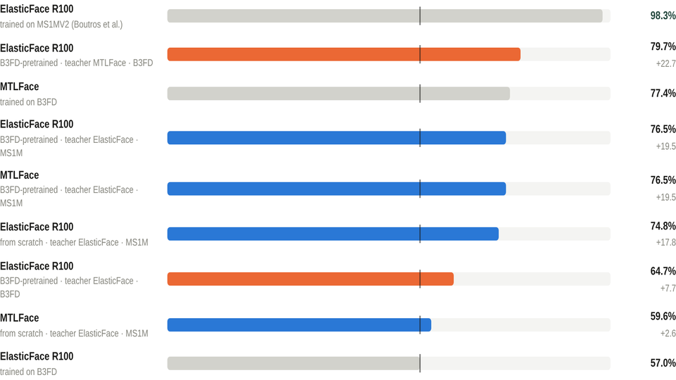
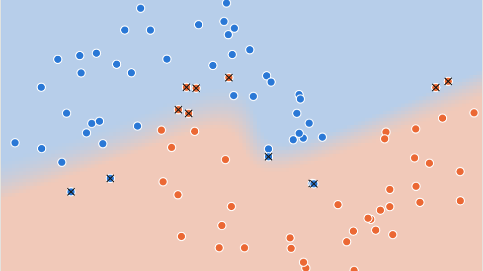
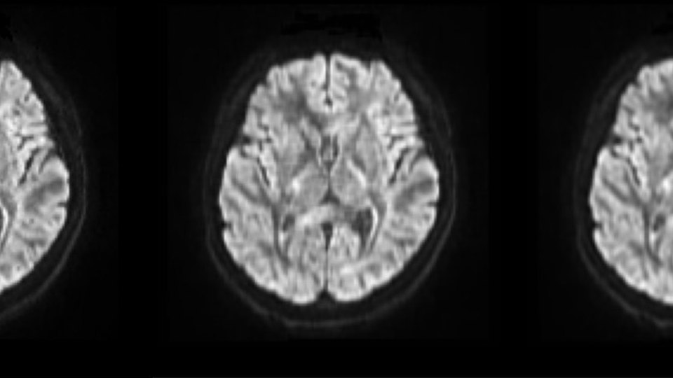
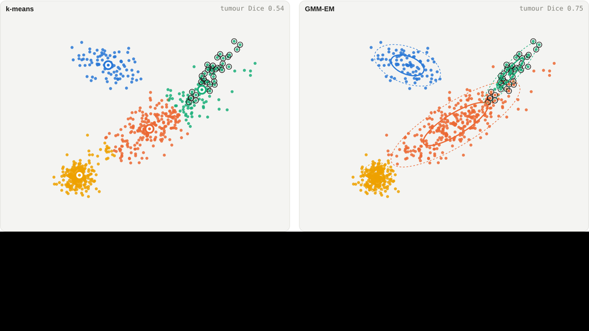

My Daily News：一个能证明没有漏掉任何内容的 AI 头版
每天早上读取 48 个 AI 信息源，只保留我没看过的内容，由 LLM 生成摘要并归入我的类别 —— 页面上还有一行字，会在某个早晨内容不完整时明确指出。原型已经可用，目前在代码冻结下接受测量， 对照的阈值在数据出现之前就已写定。这是我对这个想法的第三次尝试，我的开发方法也正是从这次尝试中形成的。 新内容判定规则在页面上实时运行。
加拿大温哥华 · 软件工程师
机器学习研究背景（UBC 工程硕士），现为软件工程师，从事地理空间基础设施建模与基于 LLM 的系统开发 — 从数据 pipeline、API，到借助 AI 编程工具以 spec-driven 方式构建的无人值守 agent。
研究生阶段的工作涵盖 generative model、few-shot learning、knowledge distillation 和医学影像信号处理；此后的工程工作则是用 Python 和 TypeScript 构建系统，把这些研究转化为能够稳定运行的软件。当前及未来的重点：LLM pipeline、agent orchestration，以及让它们值得信赖的评估方法。下面的每个项目都配有完整的案例写作和一个可交互图示， 图示运行的正是该项目自己的代码。
出于个人主动构建的产品与系统 — 每个都配有完整的案例写作和一个可交互图示，图示运行的正是该项目自己的逻辑。
每天早上读取 48 个 AI 信息源，只保留我没看过的内容，由 LLM 生成摘要并归入我的类别 —— 页面上还有一行字，会在某个早晨内容不完整时明确指出。原型已经可用，目前在代码冻结下接受测量， 对照的阈值在数据出现之前就已写定。这是我对这个想法的第三次尝试，我的开发方法也正是从这次尝试中形成的。 新内容判定规则在页面上实时运行。
一个通过我本人登录会话抓取 LinkedIn、Indeed 和 Glassdoor 的 Chrome extension，一个把每条职位同时以站点原始形态和统一的 canonical shape 存储的 FastAPI 后端，一个可连续数天无人值守运行的 orchestrator，以及一个把整张表筛成候选清单的配套服务。 以 spec-driven 方式用 Claude Code 构建 — projection 层和 orchestrator 都在页面上实时运行。
用户、角色、商品和订单，由 Go Fiber API 与 React/TypeScript 仪表盘承载 — JWT 存放在 HTTP-only Cookie 中，权限细化到每条路由，并附有 middleware 链的实时模拟器。已迁移到 Fiber v3 和 React 19，并做了坦诚的回顾。
已经完成 scope、尚未动工的项目 —— 每个页面都有大纲、待解问题和里程碑，并带有创建/更新时间戳。它们会经常变动；大纲是计划，不是承诺。一旦某个项目开工，就会上移到「独立项目」。
一个只能问“是/否”问题的猜谜游戏：LLM 担任主持人，并在玩家逐步揭开谜底的过程中实时生成场景图像和音效 —— 把 LLM 的非确定性变成可重玩性。排在队列首位；引擎设计为可复用。
把玩家投放到一个很窄的历史时刻里自由探索，基于海龟汤引擎，再加上一个有据可查的事实来源，让模拟不会凭空编造历史。有意推迟到想法 01 做出来之后。
先基于 MOSS-Transcribe-Diarize 做一个带 diarization（说话人分离）的会议转录工具；再一步步把它培育成一个助手：听到问题、调用合适的 tool、在一两秒内给你一句可以直接说出口的答案。
一条 LLM pipeline，把各家媒体报道中的事实陈述与立场表述分开，再把每个事件呈现为一个聊天室 —— 事实是房间标题，媒体是发言者，读者只旁观。
2022 – 2024 年 UBC 工程硕士期间的应用机器学习与信号处理 — 讲的是推理过程，而不只是截图。
相机在每个像素上要插值三种颜色中的两种；生成器从不这样做。把图像按四种方式 re-mosaic 并测量差异： 在 46,000 张生成图像上达到 97–100% 的检出率，且无需训练 — 还有一个可以喂入你自己照片的实时版本。

把 ResNet-100 教师模型蒸馏为年龄不变的学生模型，以 SLURM 作业形式在 Compute Canada 上训练。 蒸馏带来了 19 个百分点的提升 — 但仍然输给了专用模型。两个结果都在，以及背后的原因。
DDPM 训练目标的完整推导，从最大似然到一行式的噪声预测损失 — 重建为一个可交互页面，附带实时的 forward process 模拟器。

LeNet、AlexNet、VGG 和 ResNet 在 CIFAR-10 上由一个 meta-network stack 起来。胜出的三模型组合包含了那个只有 68% 准确率的模型 — 并附有一个实时 stacking 演练场，展示为什么多样性胜过单体强度。
从零训练 ResNet、DenseNet 和 ConvNeXt，作为 Prototypical Networks（原型网络）在 CUB 数据集上的 backbone — 外加两项没有奏效的分类器改进，以及原因分析。

从零实现的 DCT 与 PCA denoiser，在三名受试者和四个 b 值上进行评测。PCA 以约 3.5 dB 胜出 — 但两者撞上了同一堵墙，真正的发现是那条权衡曲线。

在 BraTS 2018 上做无监督脑肿瘤分割 — k-means 对阵用 PyTorch 从零写出、在 GPU 上处理九百万体素的 GMM-EM。多数患者 Dice 达到 0.9，并对漏检病例给出了精确的分析。
教育、经历与项目一览 —— 每个项目标题都链接到完整的项目介绍。
与深圳 AI 硬件公司 TWOWIN Technology 合作，研究用于机器人包裹分拣的 embodied AI。
覆盖 21 个行业的关键基础设施系统建模平台。
为客户从零设计并构建一个音乐领域的 RAG 聊天机器人。
以 denoising diffusion model 生成有向无环图，作为深度神经网络架构（神经架构搜索）。
基于强化学习的目标跟踪，用于处理遮挡。
推荐系统中的协同过滤算法。
进行中 —— 原型自 2026 年 9 月 28 日起冻结代码，用于测量。
跟随并扩展一门 Udemy 课程。
| 编程语言 | Python, Go, TypeScript / JavaScript, Java, SQL |
| 后端与数据 | FastAPI, SQLAlchemy, Alembic, Pydantic, Go Fiber, GORM, Spring Boot, REST API design, JWT / RBAC, PostgreSQL / PostGIS, MySQL, MongoDB Atlas, Redis, Kafka, GeoPandas / Shapely, NetworkX, schema 与 ERD 设计, data contract, 数据校验框架 |
| LLM 与 AI | PyTorch, NumPy, SciPy, scikit-learn, HuggingFace, OpenAI API, RAG, vector search, prompt engineering & prefix caching, rule-first LLM pipelines, LLM evaluation, diffusion models, knowledge distillation, few-shot learning, ensemble methods, Slurm |
| 前端、云与测试 | React 19, TypeScript, TanStack Query, Redux, React Router, Tailwind CSS, Chrome Extension (Manifest V3), Pytest, JUnit / Mockito, Postman, AWS (Elastic Beanstalk, EC2, CloudWatch), Docker / Docker Compose, GitHub Actions CI/CD, Git / GitHub PR workflow |
| 实践方法 | spec-driven development, soak testing, 安全审查, 双 agent 开发方法 |